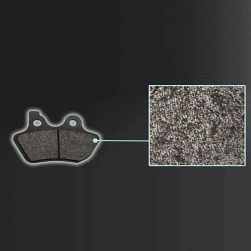
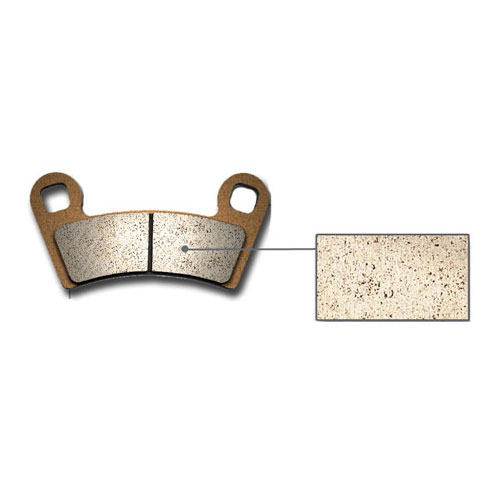

Kevlar brake pads are designed for high performance riding experience. Because of the high tensile strength-to-weight ratio, kevlar brake pads provide exceptional stopping power with great durability under all riding condition. High temperature stability up to 260C / 500F
Sintered HH brake pads have the highest coefficient of friction and are ideal for high performance motorcycle race track purposes. Sintered HH brake pads also deliver exceptional braking performance for all dirt bikes and ATVs under the most extreme conditions.
